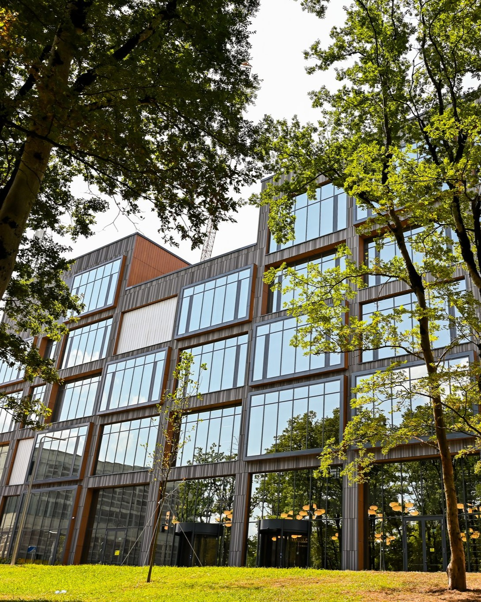
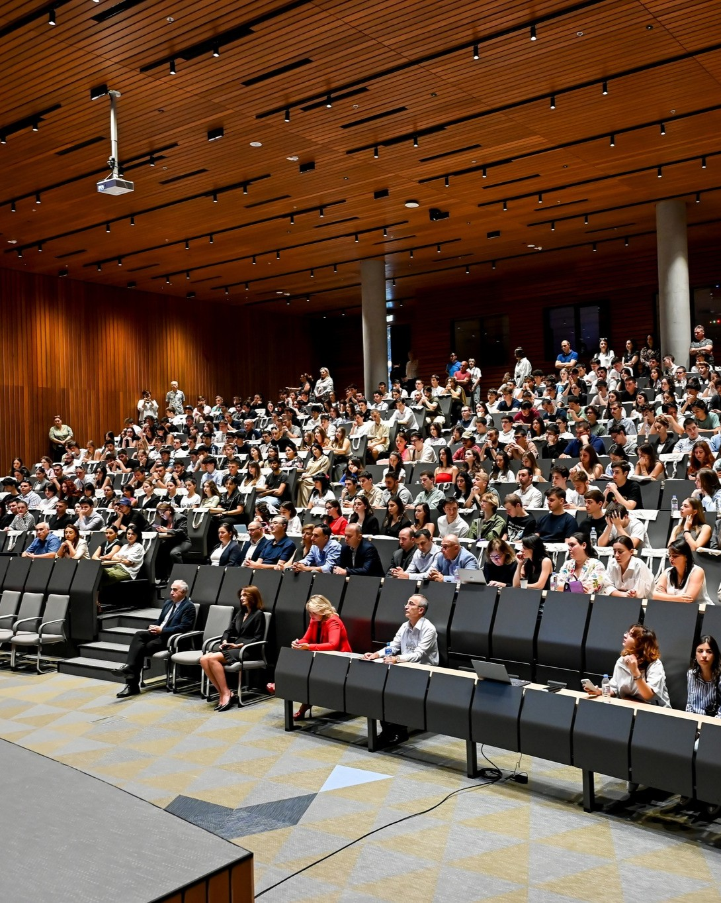

Hic Scientia futūrum creat!
Kutaisi International University Campus is located in the city of Kutaisi. Kutaisi International University (KIU) has opened its doors to the first cohort of students in 2020. The goal of the university is to gradually become an international hub of education, science and technology in the region. As a result, Georgia will take the lead on international educational and scientific arena.
KIU is currently offering undergraduate degree English language programs. KIU plans to add vocational, graduate, and post-graduate degree programs in the future. The aim of the university is to prepare highly qualified workforce and human capital that will promote economic growth and development of Georgia and the entire region.
KIU collaborates with Technical University of Munich (TUM), the leading European university. The operational model of the university is developed in partnership with TUM and TUM International GmbH. The Honorary President of Kutaisi International University is Prof. Dr. Wolfgang A. Herrmann, former President of TUM.

